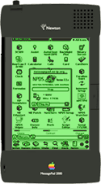
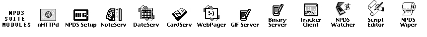

Tracker infos:
Servers are validated every
This page has been viewed
NPDS Tracker Server Version:
Welcome on
There
Shared Trackers:
- 1. UNNA.ORG
- TRACKER: unna.org
Operated by Morgan Aldridge
COUNTRY : USA / CA - 2. NewtonRulez.com
- tracker.newtonrulez.com
Operated by Pete Geremia
COUNTRY : USA / MA - 3. Applenewton
- tracker.applenewton.co.uk
Operated by Pawel Piotrowski
COUNTRY : Scotland - 3. Applenewton
- TRACKER: messagepad.net
Operated by Sylvain Pilet
COUNTRY : France

About NPDS:
The friendly web server you can hold in your hand.
NPDS is a web server and associated support modules for Newton devices running Newton OS 2.x. It was originally a project started by Matt Vaughn based on sample code by Ray Rischpater. Other contributors are Adam Tow, Victor Rehorst and Paul Guyot for this particular branch of the code. There is also a Unicode-based branch of NPDS that was being developed by Yoichi Takezawa. The NPDS site is currently preened and noodled by Grant Hutchinson. Special thanks to the NPDS webmasters who have helped by testing and sending in their bug reports and suggestions.
Information and archives for the NPDS mailing list are also available.
NPDS component modules:
Grab the latest versions of the NPDS modules for this branch of development.More informations on npds.free.fr:
NPDS Tracker Server Version:
Valid